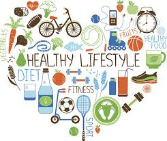

Welcome
Eating well helps you feel better and stay active. Below are some ideas, a quick list of tips, and an image. Please improve this page by adding structure, layout and better design.
Tips for Healthy Eating
Start with plenty of vegetables and fruit. Choose whole grains when you can. Drink water. Cook at home more often. Get enough sleep. Move a little every day.
This paragraph repeats content just to simulate longer text. Replace or restructure as needed for your redesign.
Weekly Recipe
Fruit & Yogurt Parfait
